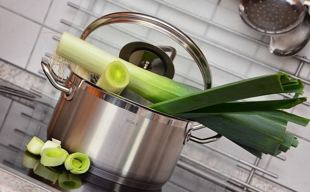
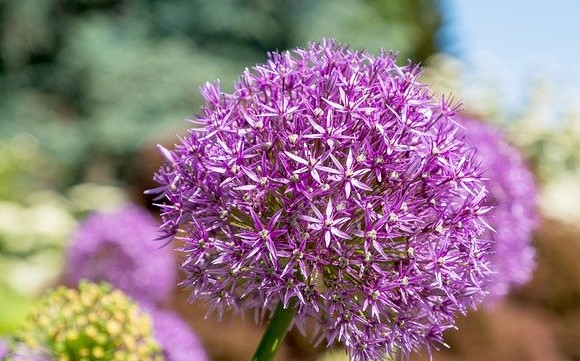

Leeks
Overview
- Allium ampeloprasum
- bundles of flat green leaf sheaths
- clusters of up to 500 urn-shaped flowers, of various colors
- up to 180cm tall (wild leek)
- native to southern Europe and western Asia
- planted in the spring and harvested in the autumn/winter
Allium ampeloprasum is the scientific of the wild leek, from which the common edible leek is derived. There are many cultivars of leeks, which can be broadly divided into two groups: culinary and ornamental. As a close relative of the yellow onion, ornamental leeks are often used for their beautiful and large flowers (which are technically umbels consisting of hundreds of flowers). These leeks are more flower than leek, making them less than ideal for culinary uses.
Culinary leeks sport a sweet, slightly onion-y flavor. While they can be cooked in many ways, they are typically added to soups and stews for flavor and depth. Leeks should be halved lengthwise, then sliced as desired to enhance flavor output. Due to the fact that leeks are grown by mounding dirt up around the stalk to create the tall, layered plant we know, thorough cleaning of the vegetable is especially important to remove any dirt or grime inside.